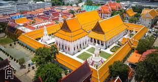

ประวัติความเป็นมา
วัดมหาธาตุยุวราชรังสฤษฎิ์ เป็นพระอารามหลวงชั้นเอก ชนิดราชวรมหาวิหาร ตั้งอยู่ในเขตพระนคร กรุงเทพมหานคร สร้างขึ้นในสมัยอยุธยา และได้รับการบูรณปฏิสังขรณ์ในสมัยรัตนโกสินทร์

สถานที่สำคัญภายในวัด
พระบรมธาตุมหาเจดีย์
เป็นเจดีย์ประธานของวัด สร้างขึ้นในสมัยรัชกาลที่ 3 มีความสูง 43.85 เมตร
พระวิหารหลวง
เป็นที่ประดิษฐานพระพุทธรูปสำคัญ และใช้ประกอบพิธีกรรมทางศาสนา
มหาวิทยาลัยมหามกุฏราชวิทยาลัย
สถาบันการศึกษาพระพุทธศาสนาที่สำคัญของประเทศไทย
การเดินทาง
ตั้งอยู่ที่ถนนมหาราช แขวงพระบรมมหาราชวัง เขตพระนคร กรุงเทพฯ
สามารถเดินทางได้โดย:
- รถประจำทางสาย 3, 6, 9, 15, 19, 30, 32, 33, 43, 53
- เรือด่วนเจ้าพระยา ท่าพรานนก
- รถไฟฟ้า MRT สถานีสนามไชย
เวลาเปิด-ปิด
เปิดทุกวัน เวลา 09.00 - 17.00 น.